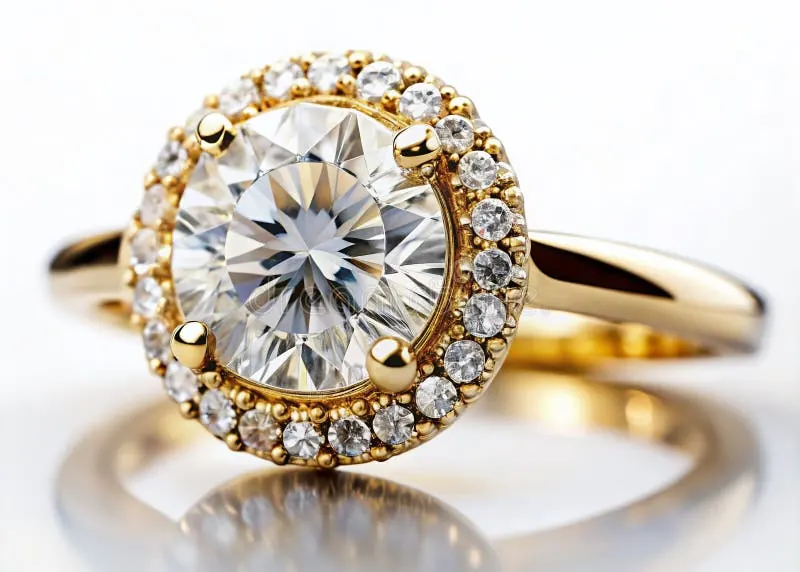

立方氧化鋯與仿鑽家族：一眼識破的訣竅
仿鑽家族臥虎藏龍，但每一號成員都有一樣藏不住的破綻——學會四招，一眼識破。

核心定義
仿鑽（diamond imitation）不是鑽石，也不是「假鑽石」的單一商品，而是一整個家族的統稱——它們以「看起來像鑽石」為目的，包括立方氧化鋯（CZ）、高鉛玻璃、合成金紅石、鈦酸鍶、人造鋁榴石（YAG）、尖晶石仿品等。其中 CZ 是當今最常見的仿鑽。
立方氧化鋯（cubic zirconia）是二氧化鋯（ZrO₂）的立方晶系晶體，1960 年代開始用於光學與珠寶，1970 年代量產後成為最成功的鑽石仿品。它折射率 2.15、硬度 8～8.5、色散 0.060——數字都不錯，但與鑽石仍有可測的差距。
特徵與分類
| 仿鑽材質 | 折射率 | 硬度 | 一眼特徵 |
|---|---|---|---|
| 立方氧化鋯 CZ | 2.15 | 8–8.5 | 火光偏強、比重高、腰圍圓滑 |
| 高鉛玻璃 | 約 1.5–1.8 | 5–6 | 光澤弱、邊緣磨損快、可有氣泡 |
| 合成金紅石 | 2.6–2.9 | 6–6.5 | 黃色調明顯、重影誇張 |
| 鈦酸鍶 | 2.41 | 5–5.5 | 折射率接近鑽石但太軟、火光過強 |
仿鑽與「假鑽」在法理上有別：仿鑽誠實標示自己是仿鑽，買賣合法；把仿鑽謊稱成鑽石賣高價，才是詐騙。消費者的功課是「認得出來」，而不是妖魔化任何材質。
科學原理
識破仿鑽的物理基礎有四個：硬度、比重、折射/色散、導熱。CZ 比重約 5.5～6（鑽石 3.52），拿在手裡明顯「墜手」；高鉛玻璃比重也不低，但光澤與邊緣磨損出賣它；合成金紅石折射率極高導致重影明顯，且常帶黃調。
導熱測試是快篩利器：除莫桑石與部分特殊寶石外，多數仿鑽（含 CZ、玻璃）導熱差，熱導儀一碰就「不亮」。但要注意——儀器只能做篩選，不是鐵證，最終判定要靠實驗室儀器。
鑑定與鑑別方法
- 看腰圍：真鑽腰圍多為「糖霜狀」磨砂或刻面化；CZ/玻璃常是光滑圓弧腰圍
- 看稜線：真鑽稜線銳利，CZ/玻璃稜線圓鈍
- 試導熱：熱導儀測 CZ/玻璃不亮、真鑽亮
- 觀察火光與光澤：CZ 火光偏硬偏豔、玻璃光澤油膩
- 比重法：CZ 明顯比同體積鑽石重
- 放大找氣泡：玻璃仿鑽常含圓形氣泡，真鑽不會
市場行情與保養建議
CZ 飾品價格低廉、款式多樣，是時尚珠寶的常見選擇；但它硬度 8～8.5，長期佩戴容易霧化磨損，不建議作為傳家或投資標的。市場上也有「鍍膜 CZ」企圖提升折射率，鑑定時要更小心。
購買二手珠寶時，仿鑽風險最高——若賣家宣稱鑽石但價格低得離譜，先別開心，很可能就是 CZ 或玻璃。用上面四招快篩，必要時送實驗室。
常見誤區
只要誠實標示，仿鑽是完全合法的寶石類別，市面有大量設計師品牌公開使用 CZ。問題不在仿鑽本身，而在「冒充鑽石賣」。要防的是詐騙，不是材質。
相反，CZ 與玻璃常「太乾淨」，而真鑽常有天然內含物。但玻璃裡常有圓形氣泡、CZ 有弧形生長紋——這些才是仿鑽的破綻，別把「乾淨」當真鑽證據。
冷知識
立方氧化鋯最初是蘇聯科學家為雷射光學開發的材料，1970 年代才走入珠寶。一顆科學用途的晶體，成了全球最暢銷的鑽石仿品。
色散 0.060 高於鑽石的 0.044，所以 CZ 的彩虹閃爍比鑽石更「張揚」。懂行的人看火光濃豔度，反而能更快起疑。
反直覺觀點
廣告裡的鑽石又大又豔，CZ 恰恰容易呈現這種「廣告感」；而真鑽的火光是內斂的。所以「看起來很夢幻」反而要提高警覺，真貨的美是低調的。
天然鑽石幾乎都有內含物或生長特徵，肉眼一塵不染、放大也無懈可擊的「完美鑽石」，反而要懷疑是 CZ、莫桑石或培育鑽。完美本身，就是一個需要查證的訊號。